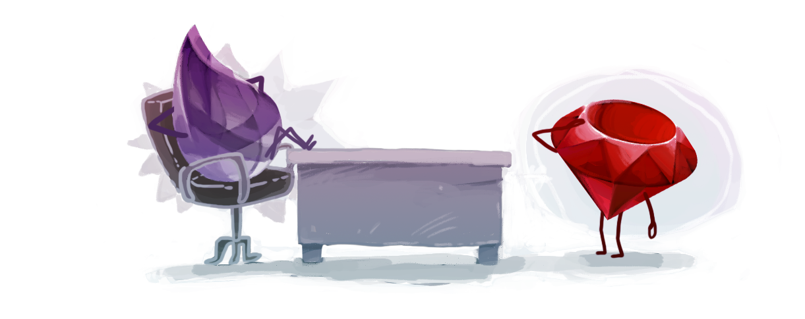

.left-column[ ## Elixir ### - History ] .right-column[ - founded by José Valim - since 2012 - functional - compiles to BEAM (Erlang VM) bytecode - it's Erlang with Ruby syntax and Clojure (LISP) semantics .center[  ] ] --- .left-column[ ## Elixir ### - History ### - Typing ] .right-column[ .center[ ``` +---------------------------------------------------------+ | Strong | | | | | | | | Elixir | C# | | Erlang | F# | | Clojure | Java | | Python | Scala | | Ruby | Haskell | | Groovy | | | | | | | | |Dynamic---------------------+----------------------Static| | | | | | | | | | | Perl | | | PHP | C | | VB | C++ | | JavaScript | | | | | | | | | | | | Weak | +---------------------------------------------------------+ ``` ] ] --- .left-column[ ## Types ### - Integers ] .right-column[ Support for binary, octal, and hexadecimal numbers comes built in ```dark iex> 255 255 iex> 0b0110 6 iex> 0o644 420 iex> 0x1F 31 ``` Integers inside Elixir are long with unlimited size ```dark iex> 0x7FFFFFFFFFFFFFFF * 2 18446744073709551614 ``` - Underscores in numeric literals can improve the readability of code - Integer module is made to work with integers ```dark iex> 1_000_000 1000000 iex> Integer.mod(5, 2) 1 ``` ] --- .left-column[ ## Types ### - Integers ### - Floats ] .right-column[ - Floating point numbers have 64-bit double precision - Support **e** for exponent values - Float module is made to work with floats ```dark iex> 3.14 3.14 iex> 1.0e-10 1.0e-10 iex> Float.to_string(1.0) "1.0" ``` ] --- .left-column[ ## Types ### - Integers ### - Floats ### - Atoms ] .right-column[ - An atom is a constant whose name is its value ```dark iex> :foo :foo iex> :foo == :bar false iex> is_atom(:"atom with spaces") true iex> :"atom with spaces" == :'atom with spaces' true ``` - Names of modules in Elixir are also atoms - Elixir modules names capitalized - No colon needed for Elixir modules names - Erlang modules names are not capitalized (they are ordinary atoms) ```dark iex> is_atom(MyApp.MyModule) true iex> :crypto.strong_rand_bytes(3) <<23, 104, 108>> ``` - Atom module is made to work with atoms ] --- .left-column[ ## Types ### - Integers ### - Floats ### - Atoms ] .right-column[ - all atoms are contained in global table in ERTS instance - comparison between atoms is extremely fast (technically there is comparison by pointer) - atoms are very good as keys in data structures (fast comparison and pattern matching) - atoms are not handled by garbage collector - dynamic cast to atom is pretty dangerous (possible memory leak) ```dark iex> data = "ok" "ok" iex> String.to_atom(data) # Bad cast :ok iex> String.to_existing_atom(data) # Good cast :ok ``` ] --- .left-column[ ## Types ### - Integers ### - Floats ### - Atoms ### - Booleans ] .right-column[ - technically Elixir does not have separate boolean type - just special syntax sugar for `true`, `false` and `nil` (no colon needed) - everything is truthy except for `false` and `nil` ```dark iex> true true iex> false == :false true iex> nil == :nil true ``` ] --- .left-column[ ## Types ### - Integers ### - Floats ### - Atoms ### - Booleans ### - Strings ] .right-column[ - technically Elixir does not have separate string type (strings are binaries) - binaries are array of bytes - double-quotes is sintax sugar for UTF-8 binaries - single-quote strings are Erlang legacy, almost never using in Elixir (list of chars, works extremely slow) ```dark iex> is_binary("hello") true iex> is_list('hello') true iex> <<104, 101, 108, 108, 111>> == "hello" true iex> [104, 101, 108, 108, 111] == 'hello' true iex> "hello" == 'hello' false ``` ] --- .left-column[ ## Types ### - Integers ### - Floats ### - Atoms ### - Booleans ### - Strings ] .right-column[ - interpolation and concatenation are supported ```dark iex> data = "world" "world" iex> "hello #{data}" "hello world" iex> "hello "<>data "hello world" ``` - String module is made to work with strings ```dark iex> String.split("hello world", " ") ["hello", "world"] iex> String.slice("hello world", 0, 4) "hell" ``` ] --- .left-column[ ## Types ### - Integers ### - Floats ### - Atoms ### - Booleans ### - Strings ### - PIDs ] .right-column[ - each process has unique ID - PID contains full info about process location (node, host etc) ```dark iex> self() #PID<0.80.0> iex> spawn fn() -> :ok end #PID<0.90.0> ``` ] --- .left-column[ ## Composite Types ### - Lists ] .right-column[ - can include multiple types - linked lists - for length algorithm complexity is `O(n)` (linear) - special infix concatenation function - special infix subtraction function - to work with lists use List / Enum / Stream module ```dark iex> list = [1, 2, :foo, "bar"] [1, 2, :foo, "bar"] iex> ["baz", 0] ++ list ["baz", 0, 1, 2, :foo, "bar"] iex> list -- [2, :foo] [1, "bar"] ``` *always remember about O(n)!* ```dark iex> bigger_list ++ smaller_list # bad usage iex> smaller_list ++ bigger_list # good usage ``` ] --- .left-column[ ## Composite Types ### - Lists ### - Tuples ] .right-column[ - collection of data stored contiguously in memory ```dark iex> {3.14, :pie, "Apple"} {3.14, :pie, "Apple"} ``` - in real life mostly used tuples with length 2 (pairs) - agreement from Erlang - tuples with :ok / :error elements - records (based on tuples) - legacy from Erlang ```dark iex> File.read("path/to/existing/file") {:ok, "... contents ..."} iex> File.read("path/to/unknown/file") {:error, :enoent} ``` ] --- .left-column[ ## Composite Types ### - Lists ### - Tuples ### - Keywords ] .right-column[ - keyword list is list of pairs (tuples with length 2) - keys are atoms - keys are ordered - keys may not be unique - special syntax sugar - implements access protocol by key - to work with Keyword lists use Keyword module ```dark iex> lst1 = [foo: "bar", hello: "world"] [foo: "bar", hello: "world"] iex> lst2 = [{:foo, "bar"}, {:hello, "world"}] [foo: "bar", hello: "world"] iex> lst1 == lst2 true iex> lst1[:foo] "bar" ``` It's not real dictionary, it's just list of pairs. *Always remember about O(n)!* ] --- .left-column[ ## Composite Types ### - Lists ### - Tuples ### - Keywords ### - Maps ] .right-column[ - since 2014 - real fast key-value storage - key / value can be any type ```dark iex> map = %{:foo => "bar", "hello" => :world} %{:foo => "bar", "hello" => :world} iex> map[:foo] "bar" iex> map["hello"] :world ``` - special syntax sugar for atom keys - atom keys works faster (because of nature of atoms) ```dark iex> map = %{foo: "bar", hello: "world"} %{foo: "bar", hello: "world"} iex> map.hello "world" iex> %{map | foo: "baz"} %{foo: "baz", hello: "world"} ``` - useful functions for maps are in Map / Enum modules ] --- .left-column[ ## Composite Types ### - Lists ### - Tuples ### - Keywords ### - Maps ### - Structs ] .right-column[ - custom datatype based on map - should be used for models instead of maps - compile-time checks and strictness ```dark defmodule Banking.User do defstruct name: "anon", balance: 0, pswdhash: <<>> end ``` - syntax looks like map + module name - support of default values ```dark iex> %Banking.User{} %Banking.User{balance: 0, name: "anon", pswdhash: ""} ``` - special syntax for updates ```dark iex> user = %Banking.User{balance: 100} %Banking.User{balance: 100, name: "anon", pswdhash: ""} iex> %Banking.User{user | name: "Foo", pswdhash: <<1, 2, 3>>} %Banking.User{balance: 100, name: "Foo", pswdhash: <<1, 2, 3>>} ``` ] --- .left-column[ ## Composite Types ### - Lists ### - Tuples ### - Keywords ### - Maps ### - Structs ] .right-column[ - for dynamic dicts use map - for data models use structs - using of structs is very helpful in refactoring ```dark defmodule Banking.User do defstruct username: "anon", # let's rename field balance: 0, pswdhash: <<>> end ``` - code with `name` field now gives compile error ```dark iex> %Banking.User{name: "Foo"} ** (KeyError) key :name not found in: %Banking.User{balance: 0, pswdhash: "", username: "anon"} iex> user = %Banking.User{} %Banking.User{balance: 0, pswdhash: "", username: "anon"} iex> %Banking.User{user | name: "Foo"} ** (KeyError) key :name not found in: %Banking.User{balance: 0, pswdhash: "", username: "anon"} ``` ] --- .left-column[ ## Semantics ### - Features ] .right-column[ - no statements - everything is an expression - completely immutable data - forget about variables - forget about loops - forget about return and goto .center[ <img src="img/erlang-meme.jpg" width="100%"> ] ] --- .left-column[ ## Semantics ### - Features ### - Pattern matching ] .right-column[ - operator `=` is not assignment but match - like equals sign in algebra ```dark iex> x = 1 1 iex> 1 = x 1 iex> 2 = x ** (MatchError) no match of right hand side value: 1 ``` - performs assignment when the left side of the match includes a variable - technically in Elixir there is variable rebinding (very bad practice) - variable still immutable (rebinded variable exists only after rebinding expression) ```dark iex> x = 1 1 iex> x = 2 # it's other x! 2 ``` ] --- .left-column[ ## Semantics ### - Features ### - Pattern matching ] .right-column[ - ofc pattern matching works with any elixir term ```dark iex> list = [1, 2, 3] [1, 2, 3] iex> [a, b, c] = list [1, 2, 3] iex> a 1 ``` ```dark iex> map = %{foo: "bar"} %{foo: "bar"} iex> %{foo: data} = map %{foo: "bar"} iex> data "bar" ``` ```dark iex> tuple = {:ok, "baz"} {:ok, "baz"} iex> {:ok, data} = tuple {:ok, "baz"} iex> data "baz" ``` ] --- .left-column[ ## Semantics ### - Features ### - Pattern matching ] .right-column[ - list is - empty list or - head element + tail where tail is list - special syntax to split lists ```dark iex> [head | tail] = [1, 2, 3] [1, 2, 3] iex> head 1 iex> tail [2, 3] ``` - special syntax to construct lists ```dark iex> list = [2, 3] [2, 3] iex> [1 | list] [1, 2, 3] iex> [1 | [2 | [3 | []]]] == [1, 2, 3] true ``` ] --- .left-column[ ## Semantics ### - Features ### - Pattern matching ] .right-column[ - any structures can be pattern matched ```dark iex> %Banking.User{name: name} = %Banking.User{} %Banking.User{balance: 0, name: "anon", pswdhash: ""} iex> name "anon" ``` - any nested data can be pattern matched too ```dark iex> nested = {:ok, [%{foo: "bar", baz: "buf"}, 2, 3]} {:ok, [%{foo: "bar", baz: "buf"}, 2, 3]} iex> {:ok, [%{foo: data}|_]} = nested {:ok, [%{foo: "bar", baz: "buf"}, 2, 3]} iex> data "bar" ``` ] --- class: center, middle # Thanks [back to index](index.html)